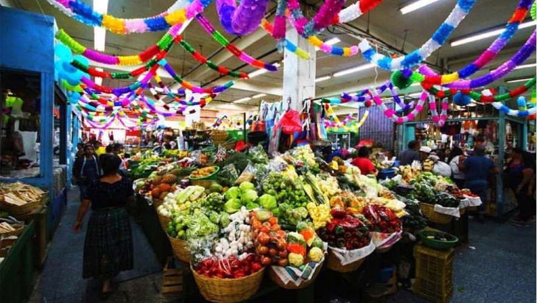

The Heart of Our Cuisine

The Legacy of Corn Masa
Corn is the foundational ingredient of Guatemalan gastronomy. Used in tamales, tortillas, and atol, masa connects modern culinary practices directly back to ancient Mayan traditions.
The Importance of Recados
Many traditional dishes rely on "recados" – complex, slow-cooked sauces made from toasted seeds, chilies, tomatoes, and tomatillos. These are what give dishes like Chuchitos and tamales their unmistakable flavor.
Street Food Culture
Antojitos are more than just snacks; they are social events. Whether enjoying Elotes Locos at a patronal fair or grabbing a Shuco in the city, food brings the community together.